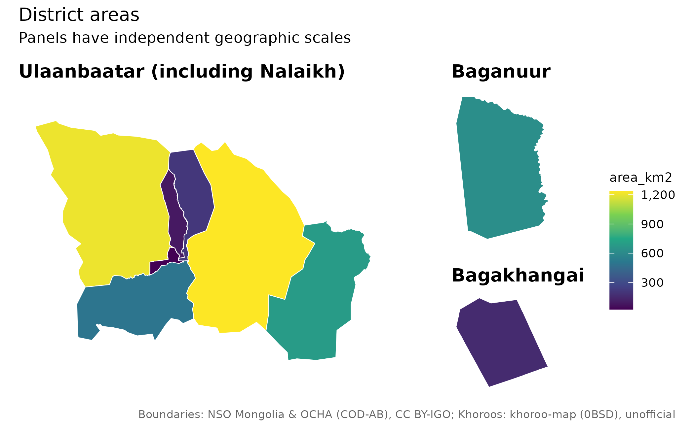
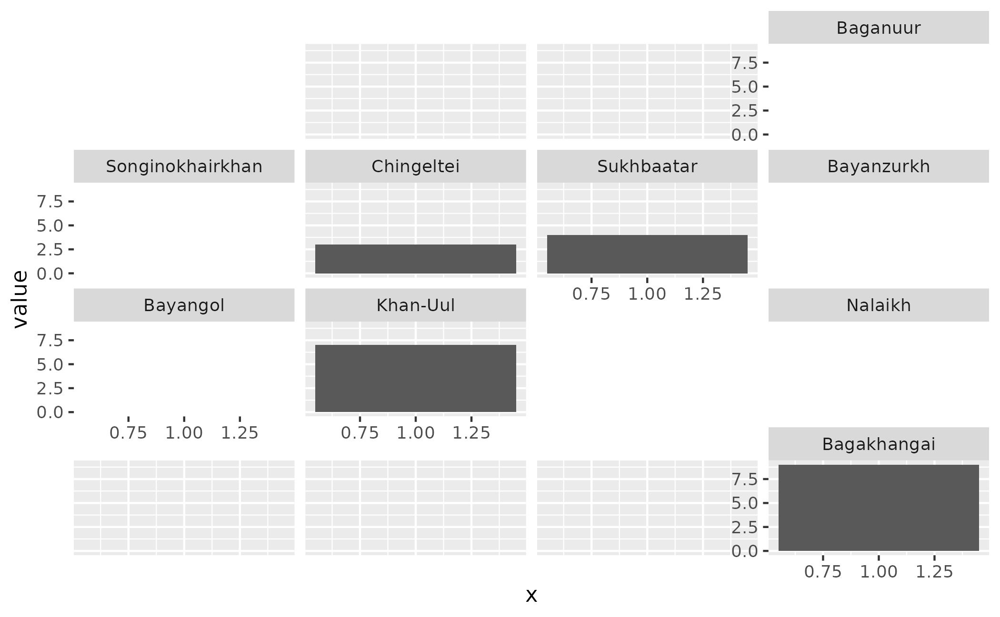

Keep a record of every join decision
Use codes where possible. When names repeat, supply the parent in a
column or restrict the candidate universe with within.
district <- mn_join(
data.frame(place = "Bayangol", cases = 12),
"place", level = "soum", within = "Ulaanbaatar"
)
mn_join_audit(district)[c("row", "x", "pcode", "status", "action")]
#> # A tibble: 1 × 5
#> row x pcode status action
#> <int> <chr> <chr> <chr> <chr>
#> 1 1 Bayangol MN1107 exact joinedmn_match(details = TRUE) exposes candidates, normalized
keys, aliases and edit distances. A short edit distance is a spelling
rule, not a probability that a match is correct. Strict joins reject
fuzzy/unresolved keys, missing boundaries and duplicate place/stratum
keys.
observations <- data.frame(
place = c("Uvs", "Uvs", "Khovd", "Khovd"),
Year = c(2024, 2025, 2024, 2025),
cases = c(10, 12, 20, 15)
)
joined <- mn_join(observations, "place", level = "aimag",
strata = "Year", strict = TRUE, fuzzy = FALSE)
mn_join_audit(joined)[c("row", "status", "action")]
#> # A tibble: 4 × 3
#> row status action
#> <int> <chr> <chr>
#> 1 1 exact joined
#> 2 2 exact joined
#> 3 3 exact joined
#> 4 4 exact joinedThe audit has one record per original input row. Its row numbers do not refer to rows of a subsequently filtered map. It distinguishes unmatched keys from known units without geometry, geographic exclusions and other administrative levels. Audit/provenance attributes can be lost if an object is rebuilt; save them explicitly for an analysis record.
Reconcile Ulaanbaatar within statistical strata
NSO codes 5 and 511 sometimes hold complementary capital observations. Declare all statistical dimensions and the measure columns. Check table metadata first: this geographic equivalence is not valid for every table.
table <- data.frame(
Region = c("5", "511", "5", "511"),
Month = c("July", "July", "August", "August"),
value = c(10, NA, NA, 20)
)
capital <- mn_join(table, "Region", level = "aimag",
strata = "Month", value_cols = "value")
#> ℹ Using Ulaanbaatar region values to fill capital data within 1 statistical
#> stratum/strata.
sf::st_drop_geometry(capital[capital$pcode == "MN11", c("Month", "value")])
#> # A tibble: 2 × 2
#> Month value
#> * <chr> <dbl>
#> 1 July 10
#> 2 August 20
mn_join_audit(capital)[c("row", "x", "action")]
#> # A tibble: 4 × 3
#> row x action
#> <int> <chr> <chr>
#> 1 1 5 joined
#> 2 2 511 superseded
#> 3 3 5 superseded
#> 4 4 511 joinedThe default prefers a nonmissing capital value and fills missing
values from the region. Conflicts produce a warning. Use
ub_policy = "error" to stop on conflicts,
"prefer_region" to reverse precedence, or
"none" to disable this reconciliation. Never sum
mixed-level NSO rows to calculate a retained percentage: totals and
their components overlap.
Separate statistical years from boundary vintages
mn_vintages()[c("id", "data_version", "geometry_vintage", "authority")]
#> # A tibble: 4 × 4
#> id data_version geometry_vintage authority
#> <chr> <chr> <chr> <chr>
#> 1 admin data-v1 COD 2020; Ulaanbaatar khoroo-derived 2026 official…
#> 2 khoroos data-v1 2026 source snapshot; effective date unknown unoffici…
#> 3 codes data-v1 NA source s…
#> 4 admin_high data-v1 COD 2020; Ulaanbaatar khoroo-derived 2026 official…
mn_provenance(mn_khoroos())[c("id", "source_revision", "effective_date")]
#> # A tibble: 2 × 3
#> id source_revision effective_date
#> <chr> <chr> <chr>
#> 1 khoroos bb1bf18f27e57d7a5aa7fe6d4a17234b40e162c1 NA
#> 2 codes 2025 NA
mn_citation(mn_settlements())
#> [1] "Settlements: Wikidata (CC0)"Only data-v1 geometry is currently available. Passing
another boundary_version to an administrative getter errors
instead of relabeling the available map as a historical boundary. Khoroo
geometry is unofficial and reconciled; its source snapshot date does not
establish its effective date. Historical comparisons need compatible
codes and actual historical geometry or an explicit reallocation
procedure.
Compare maps using common scales
mn_map(joined, fill = cases, limits = c(0, 25), breaks = c(0, 10, 20)) +
ggplot2::facet_wrap(~Year)
bins accepts interval counts or explicit cut points. Use
explicit cut points for comparisons. midpoint = 0 gives a
diverging scale for differences. Grey means missing values; zero and
missing observations should be coded separately. Preserve suppression
and uncertainty variables when preparing health statistics; a map does
not establish rate stability.
Enlarge Ulaanbaatar without moving analytical geometry
pop <- mn_example_population[mn_example_population$Year == 2025, ]
aimags <- mn_join(pop, "Region", level = "aimag")
#> ℹ Joining at the aimag level; dropped 5 rows for larger units ("country" and
#> "region") and 2196 rows for smaller units ("soum" and "bag").
mn_inset_ub(aimags, fill = value, trans = "log10",
title = "Population, 2025")
For finer urban data, pass an ub map with a fill
expression in the same units as the national data. Limits, breaks and
bin cut points are shared. The panels use independent geographic scales.
The UB layout separates Baganuur and Bagakhangai; its main panel
includes Nalaikh.
mn_map_ub(fill = area_km2, title = "District areas")
Small multiples and population-aware views
Use mn_aimag_grid for aimags and mn_ub_grid
for the nine districts. Tile positions are approximate geographic
layouts, not coordinates. Per-aimag soum grids are usually more readable
than hundreds of national soum panels.
grid <- mn_ub_grid
grid$value <- seq_len(nrow(grid))
ggplot2::ggplot(grid, ggplot2::aes(1, value)) +
ggplot2::geom_col() +
geofacet::facet_geo(~code, grid = mn_ub_grid, label = "name")
#> Note: You provided a user-specified grid. If this is a generally-useful
#> grid, please consider submitting it to become a part of the geofacet
#> package. You can do this easily by calling:
#> grid_submit(__grid_df_name__)
#> Warning in min(x): no non-missing arguments to min; returning Inf
#> Warning in max(x): no non-missing arguments to max; returning -Inf
#> Warning in min(x): no non-missing arguments to min; returning Inf
#> Warning in max(x): no non-missing arguments to max; returning -Inf
#> Warning in min(x): no non-missing arguments to min; returning Inf
#> Warning in max(x): no non-missing arguments to max; returning -Inf
#> Warning in min(x): no non-missing arguments to min; returning Inf
#> Warning in max(x): no non-missing arguments to max; returning -Inf
#> Warning in min(x): no non-missing arguments to min; returning Inf
#> Warning in max(x): no non-missing arguments to max; returning -Inf
#> Warning in min(x): no non-missing arguments to min; returning Inf
#> Warning in max(x): no non-missing arguments to max; returning -Inf
#> Warning in min(x): no non-missing arguments to min; returning Inf
#> Warning in max(x): no non-missing arguments to max; returning -Inf
A Dorling cartogram is an optional alternative: size circles by population and use colour for an analytically defensible rate. Retain the original geometry for analysis. Check missing/zero weights, geographic vintage, and any instability or suppression in the rate before using this recipe.
# Optional package: install.packages("cartogram")
# For health rates, prepare compatible numerators and denominators separately.
analysis_map <- sf::st_transform(aimags, mn_crs("albers"))
analysis_map$people_per_km2 <- analysis_map$value / analysis_map$area_km2
display_map <- cartogram::cartogram_dorling(analysis_map, weight = "value")
mn_map(display_map, fill = people_per_km2)Raster summaries and offline work
Population grids contain people per cell. The
default mn_zonal(r, polygons, fun = "sum") weights each
count by its covered cell fraction. It assumes a uniform allocation
inside each cell. A 1 km grid cannot recover building-level population.
For means, coverage fractions are not physical area weights on a
longitude/latitude grid. Median summaries require
exact = FALSE.
Prefer analysis on the native population grid. If
mn_population(crs = ...) is used for export, weighted-sum
remapping is normalized to preserve the retained native-grid total. This
does not validate local allocations; inspect the
mongolmaps_remapping attribute. Raster map resampling is
for display only.
assets <- mn_assets()
assets[assets$id == "worldpop_2025_1km", c("id", "year", "resolution", "url")]
#> # A tibble: 1 × 4
#> id year resolution url
#> <chr> <int> <chr> <chr>
#> 1 worldpop_2025_1km 2025 1km https://data.worldpop.org/GIS/Population/G…
mn_download(c("admin_high", "worldpop_2025_1km"))
mn_cache_verify()
options(mongolmaps.offline = TRUE)WorldPop files are opt-in, so mn_download("all") does
not fetch every year and resolution. Cached downloads are checked
against their checksum by default; old data versions remain until
explicitly cleared. Automatic protected-area refresh keeps a valid stale
file if refreshing fails. An explicit refresh = TRUE
requires a successful refresh and preserves the old file on failure.
For cartographic water removal, mn_erase_water() returns
a new geometry and land_area_km2, leaving the input and its
area_km2 unchanged. Land is not the same as inhabited land.
When composing additional layers, combine their credits explicitly, for
example
mn_citation(c("admin", "osm_roads", "osm_water")).